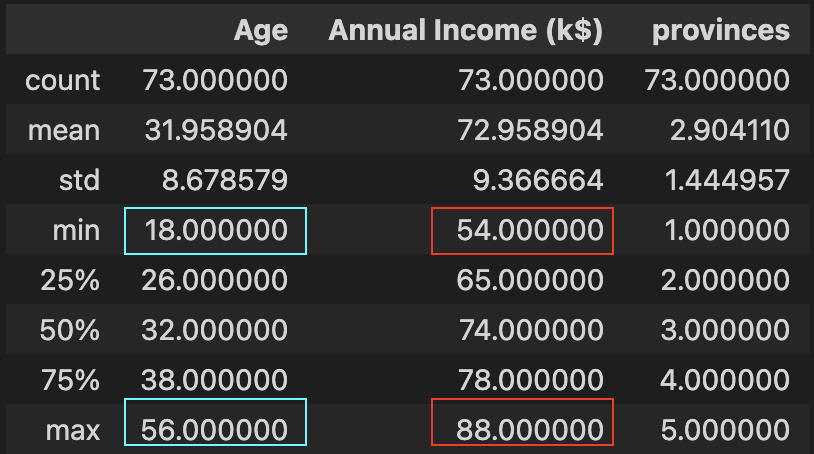
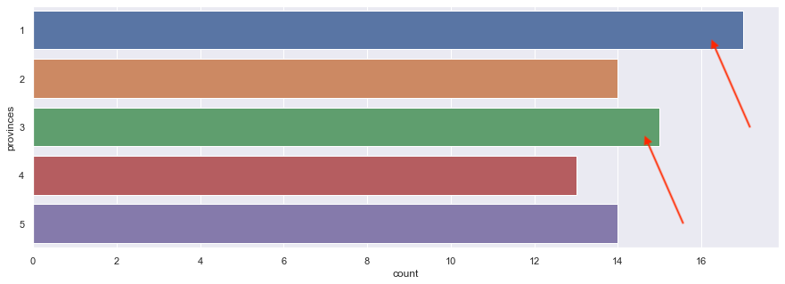

TLDR; Input list of customers data & their details, output the group of customers that biggest number of customer in a certain group (age, income, province), where we can recommend these group of customers to the marketing team to aim our marketing efforts to these interested customer of ours.
Scenario
The marketing manager has collected some basic data about our customers such as Customer ID, age, gender, annual income, province they live, which industry they work at, how do they know us, and spending score. Spending Score is something you assign to the customer based on your defined parameters like customer behavior and purchasing data. They need our expertise to translate these data into a data-driven actionable plan
How?
Some ideas is that we can create a cluster of customers that each has different profiles (different age, annual income, etc). From there, we can get which cluster that has most customer in it, and we can recommend the marketing team to focus marketize on these people first
Such scenario, we can use K-Means Clustering method, which is one of unsupervised machine learning method. Interested readers can discover more HERE
How can we execute this ? for my frequent reader, you've guessed it. we'll be using OSEMN framework on this!
Obtain
Data given from the marketing & survey team, and thankfully they've store it in csv format for us.
Above the sneak-peek of the data. and to those that thinks that you can achieve doing this analysis using excel, drop me a message when the data given to you is 1 million rows. I always love to learn new things! :)
Scrub
Just ensure two things. No missing data & all data are numerical format, as K-means (and any other ML models best) works on numerical data only
As for non-numerical data like Province (Java, Kalimantan,..), Industry (IT, Finance, ..) and How they know about us (FB ads, Friends,...), since we are doing k-means clustering, it is completely fine to assign each category to numerical direcly.
Do note that doing this approach in supervise learning will result us allocating some provinces more important than other unintentionally. Example, we set java : 3, kalimantan : 1, means we saying java is 3x more significant than kalimantan for no reason
With that being said, let Province be converted to :
- java : 1
- kalimantan : 2
- sulawesi : 3
- papua : 4
- sulawesi : 5
Industry be converted to :
- IT : 1
- finance : 2
- real estate : 3
- education : 4
- government : 5
How you find us be converted to :
- instagram ads : 1
- fb ads : 2
- google ads : 3
- egoogle search : 4
- friends : 5
Explore
Good practice before we enter to this stage is to know what are the things that you trying to figure out that can be useful to our endgoal (recommend which customer profile to focus on?) ?
With that being said, we'll be covering 3 basic questions :
- We have more male or female ? (use countplot)
- What are the majority of the age, income & spending score each, with respect to gender ? (use multiple swarmplot & violinplot
- What are the relationship between each other variables ? (use regplot, heatmap for advanced users)
There's ALOT of undiscovered gems & insights here, so please do use my examples as stepping stones in order for you to dig deeper
Q1) We have more male or female ?
A1) From countplot, we can see 112 (56%) are female, 88 (44%) are male
-----
Q2) What are the majority of the age, income & spending score each with respect to gender ?
A2) From Violinplot & Swarmplot, we can see that :
- majority for male, age 25-35, income 50-80, spending score 40-60
- majority for female, age 25-35, income 50-80, spending score 40-60
- both m & f can be seen that :
- age reaches it peak at around 30, and decline slowly
- income increase fast from 0 to 60, and 60 onwards decline even at faster exponential-like speed
- spending score behavior:
- female increases consisteltly from 0 to 45, and decreases slower to the tail 100
- male had a good growth from 0 to 15, and stagnant from 15 to 30, and growth same speed again from 30 to 50, and gradual consistent decline from peak 50 to 100
- none of the factors (age, income, spendingscore) has linear relatioship as they increases (obvious for age, but not-so on income & spendingScore. (maybe thet discover another better luxury mall ?))
-----
Q3) What are the relationship between each other variables ?
A3) From Regression Plot :
- none of the data between has any relationships between age, income, spending
- age & spendingscore has some weak relationship (older they get, lessen their spendingscore become)
- income & spendingscore have interesting relationship that spendingScores stays at 50 during 40-60 income, and no relationship at all at before 40 & after 60 income
Even from Explore step, we can actually give a recommendation already, where we can see on Q2, we can share those findings and call it a day. And for the hardworking one, let's go to next step
Model
....to be frank, you can immediately jump from 'Scrub' to here immediately, if you're just interested in K-means, but its a bad practice and can lead you building bad habit. (Explore part is like eating vegetables, don't skip it!)

In short, there's only two parts. One is to find the most optimal K (how many clusters that can covers the most with least distance number (inertia)), and plot the result to find out which cluster has the most data in it, where these cluster is the one we recommend to the marketing team
And for finding optimal K, we will be using 'Elbow method'. You'll find out soon why is it called elbow. (spoiler : i swear its pretty lame)
For simplicity, we will be covering two K-means clustering. First is with two variables, and Second with three variables
1) Two variables (Age & Spending Score)
- Elbow plot
- Plot result
We can see that after number 4 on the x-axis, the decrease aren't much anymore, hence we take 4 as the K (no of clusters). And you can see it yourself that the shape resembles like an elbow, hence the name. hahahhelpmehahaha
We can see that with K=4, we can recommend to the marketing team that we can focus marketize on age between 15 - 40, spending score between 30-65 (the green area, as it has highest dots-to-area ratio
2) Three variables (Age & Annual Income & Provinces)
- Elbow plot
- Plot result
We can see that after number 4 on the x-axis, the decrease aren't much anymore, hence coincidentally for this, also K=4
I know, the chart is hella-funky. Bottom line is, we want to know which cluster is the most dense. Hence we can count how many are there using code, and result, is the first cluster with 73 variables.
Now, we analyse deeper on first cluster, below the summary of the data in cluster 1 & countplot of the province showing which is the top province, shows that we can focus on age between 18-56, income between 54-88, province 1 & 3 (java and sulawesi)

iNterpret
Recommendation to be given to the Marketing Team :
- From swarm & violinplot (in explore) :
- majority for male, age 25-35, income 50-80, spending score 40-60
- majority for female, age 25-35, income 50-80, spending score 40-60
- both m & f can be seen that :
- age reaches it peak at around 30, and decline slowly
- income increase fast from 0 to 60, and 60 onwards decline even at faster exponential-like speed
- spending score behavior:
- female increases consisteltly from 0 to 45, and decreases slower to the tail 100
- male had a good growth from 0 to 15, and stagnant from 15 to 30, and growth same speed again from 30 to 50, and gradual consistent decline from peak 50 to 100
- From 2d plot age vs spendingScore (in model) :
- age & spending : age 15-40, spending 30-65
- you may discover better by looking other combo (2 options out of age, spending, income)
- now we get to the point and jump to finale, compare all 3 & recommend to management which group we should focus first
- From 3d plot age vs income vs province (in model) :
- focus on age between 18-56, income between 54-88, province 1 & 3 (java and sulawesi)
- How to Improve
- think of another dataset that can bring impact to this (city they come from, occupation, etc).
- in 'explore' section, use different charts to try find out which are the 3 columns you think that it will be most useful ?
- data science its just a tool, what matter most is your domain knowledge towards your business. with that, you will know the right question to ask, and get the right data to get to get best result
Final words from Dwi
For those who scrolled to the end, Thanks for reading, and here's the source code to play around! (Especially the 3D model part)